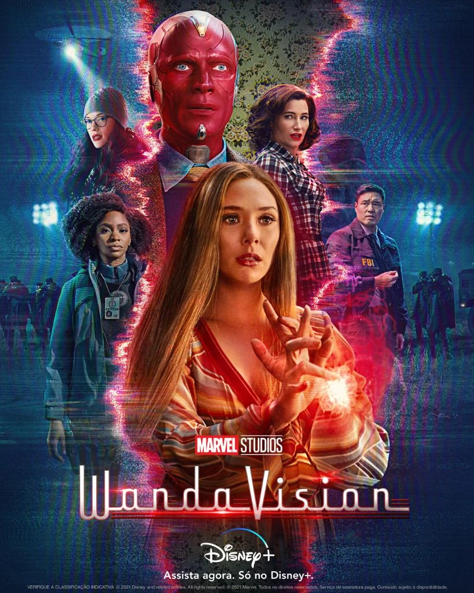

The Flash
After being struck by lightning, Barry Allen wakes up from his coma to discover he's been given the power of super speed, becoming the Flash, and fighting crime in Central City. Barry Allen was struck by lightning and got in a coma for 9 months. After he awoke from his coma 9 months later, Barry met Cisco Ramon, Harrison Wells and Caitlin Snow. He later on realized that he has powers and how it had been caused by the explosion of the particle accelerator.
Game of Thrones
In the Game of Thrones, you either win or you die. In the mythical continent of Westeros, nine families of higher nobility (Targaryen, Lannisters, Starks, Tyrell, Martell, Greyjoys, Baratheons and Boltons) scramble bitterly to gain power over the seven kingdoms and the Iron throne.
Annie with an E
The drama revolves around a young orphaned girl who, after an abusive childhood spent in orphanages and the homes of strangers, is mistakenly sent to live with an elderly spinster and her aging brother.
WandaVision
It portrays how Wanda & Vision both oddly super powerful couple hide their superpowers from other people in Westview & try to live like a normal couple. But things aren't the way as it seems, reality is different.
An extraordinary lawyer
Brought to life by the fantastic performance of Park Eun-Bin, the show centers on 27 year old Woo Young-Woo, who graduated top of her class at both college and law school. Her impressive memory and thought process are only held back by one thing – she's diagnosed with autism spectrum disorder.